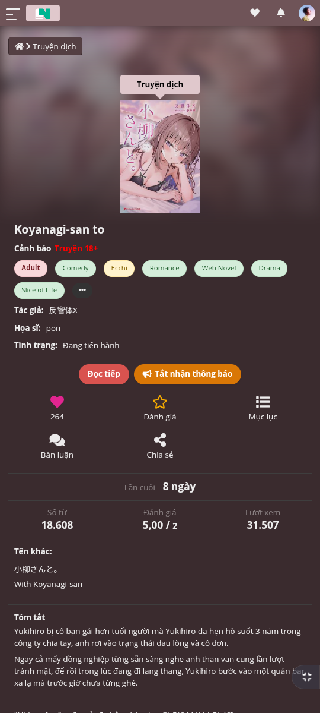
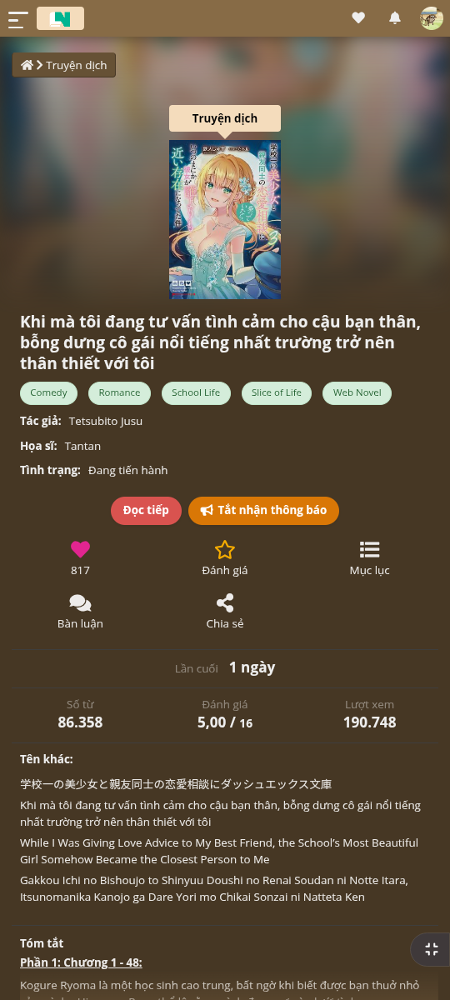
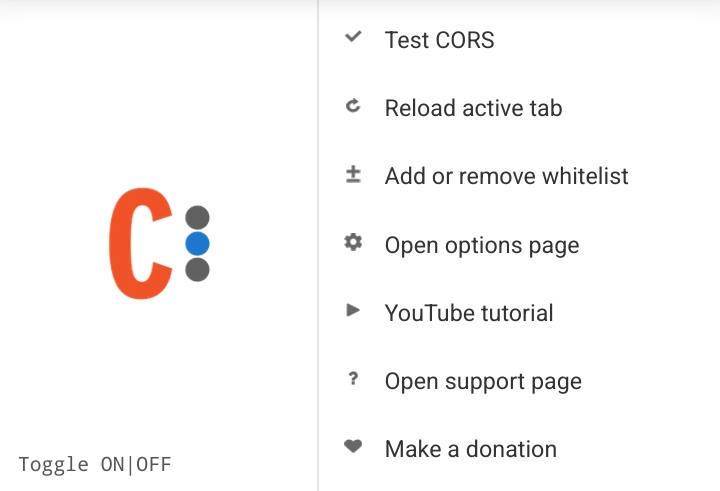
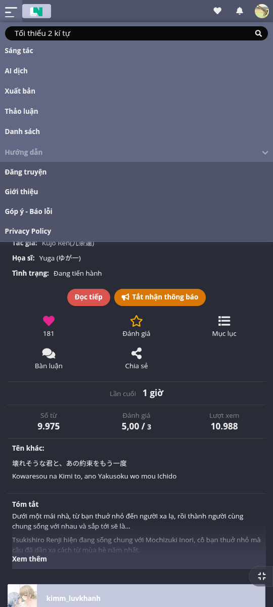
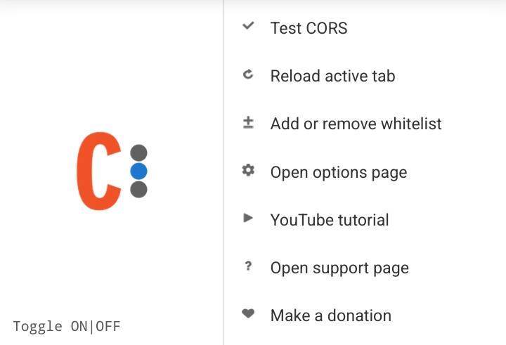
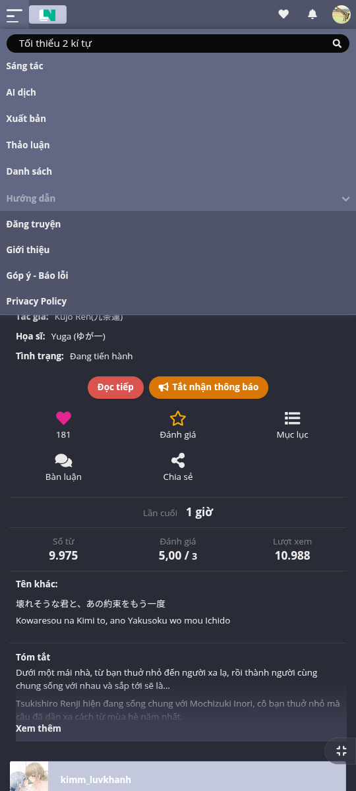
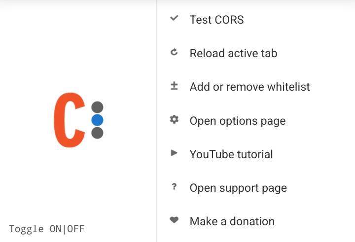
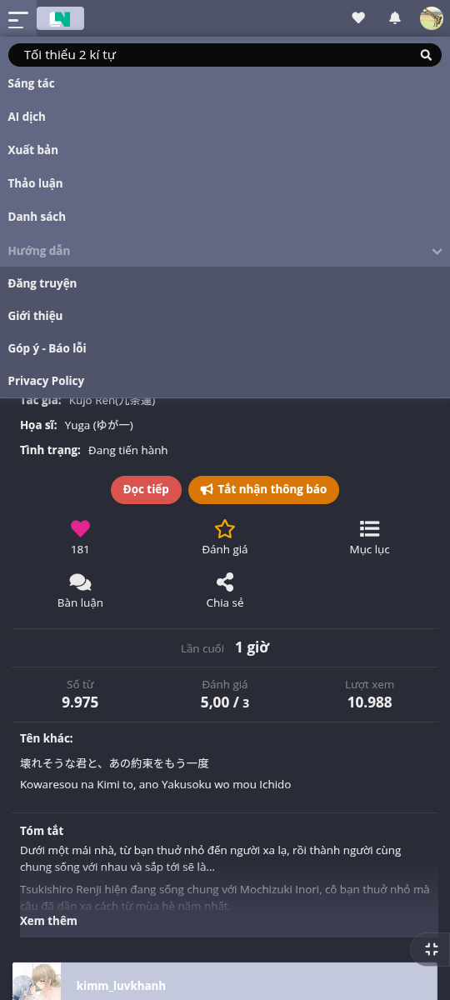

Giới thiệu
Hako: Monet Theme là userscript tự động áp dụng Material You color scheme cho trang web Hako và DocLN dựa trên màu sắc từ ảnh bìa truyện. Script phân tích màu sắc ưu tiên màu tóc nhân vật để tạo ra trải nghiệm cá nhân hóa và đẹp mắt.
Tính năng nổi bật
Phân tích màu tự động
Tự động phân tích màu sắc từ ảnh bìa truyện để tạo palette màu phù hợp
Giao diện responsive
Thiết kế hiện đại, tương thích với mọi thiết bị và độ phân giải
Dark Mode
Hỗ trợ chế độ tối, giảm mỏi mắt khi đọc truyện ban đêm
Tối ưu hiệu suất
Được tối ưu hóa để hoạt động mượt mà, không ảnh hưởng trải nghiệm
Cài đặt
- Cài đặt extension userscript manager: Tampermonkey hoặc Violentmonkey
- Cài đặt extension CORS: Chromium hoặc Firefox
- Nhấp vào nút "Cài đặt ngay" phía trên để cài đặt script
- Bật extension CORS và thêm các domain Hako/DocLN vào whitelist
- Truy cập trang Hako/DocLN và tận hưởng trải nghiệm mới!
Hình ảnh


 





Hỗ trợ
Contributing
Đóng góp của bạn luôn được chào đón! Vui lòng đọc hướng dẫn đóng góp trước khi tạo pull request.